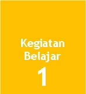
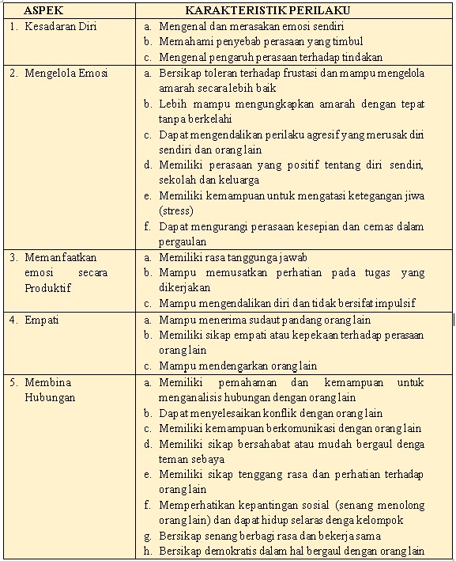

Definisi Kognitif dan Konsep Kecerdasan
Bahasan pada Kegiatan Belajar 1 adalah mengenai definisi kognitif
Untuk mengetahui lebih dalam mengenai definisi kognitif, silahkan simak video berikut
Setelah mengamati tayangan video tersebut,
jadi menurut Anda apakah pengertian dari kognitif??
Istilah cognitive berasal dari kata cognition yang padanannya adalah knowing, yang berarti berarti mengetahui. Dalam arti yang luas, cognition ialah perolehan, penataan dan penggunaan pengetahuan (Khadijah, 2016). Beberapa ahli Psikologi yang berkecimpung dalam bidang pendidikan mendefinisikan kognitif dengan berbagai istilah, yaitu:
1. Terman mendefinisikan bahwa kognitif adalah kemampuan untuk berpikir secara abstrak.
2. Colvin mendefinisikan bahwa kognitif adalah kemampuan untuk menyesuaikan diri dengan lingkungan.
3. Henman mendefinisikan bahwa kognitif adalah intelektual ditambah dengan pengetahuan.
4. Hunt mendefinisikan bahwa kognitif adalah teknik untuk memproses informasi yang disediakan oleh indera.
5. Gagne mendefinisikan bahwa kognitif adalah proses yang terjadi secara internal di dalam pusat susunan syaraf pada waktu manusia sedang berpikir.
Piaget mendefinisikan bahwa kognitif adalah keluasan pengetahuan individu, daya nalar, kreatifitas, kemampuan bahasa dan memori. Menurut Piaget, perkembangan kognitif mempunyai empat aspek, yaitu 1) kematangan, sebagai hasil perkembangan susunan syaraf; 2) pengalaman, yaitu hubungan timbal balik antara orgnisme dengan dunianya; 3) interaksi social, yaitu pengaruh-pengaruh yang diperoleh dalam hubungannya dengan lingkungan social, dan 4) ekullibrasi, yaitu adanya kemampuan atau system mengatur dalam diri organisme agar dia selalu mempau mempertahankan keseimbangan dan penyesuaian diri terhadap lingkungannya. Secara umum kognisi dapat disimpulkan sebagai proses mental yang mencakup kemampuan untuk berfikir, mengingat, belajar suatu hal, mempertimbangkan, memperoleh ide kreatif dan memecahkan masalah. (Santrock, 2016)
Faktor-faktor yang mempengaruhi intelegensi menurut Ngalim Purwanto (dalam Yenti, 2014) yaitu meliputi pembawaan (genetis), kematangan organ tubuh, pembentukan dari lingkungan, minat dan pembawaan yang khas serta kebebasan memilih metode dalam memecahkan masalah.
-
- Pembawaan (genetis)
Pembawaan ditentukan oleh sifat-sifat dan ciri-ciri yang dibawa sejak lahir. Batas kemampuan kita dalam memecahkan permasalahan, pertama ditentukan oleh pembawaan kita. Orang ada yangpintar dan ada yang bodoh meskipun menerima latihan yang sama perbedaan itu masih tetap ada.
- Kematangan fisikSetiap organ dalam tubuh mengalami pertumbuhan dan perkembangan. Tiap organ dapat dikatakan telah matang jika ia telah mencapai kesanggupan menjalankan fungsinya masing-masing secara optimal. Dalam hal ini kemampuan berfikir dan intelligensi sangat dipengaruhi oleh kematangan organ dalam otak anak. Anak anak tidak dapat memecahkan soal soal tertentu karena soal tersebut masih terlampau sukar baginya. Organ tubuh dan fungsi jiwanya belum matang untuk memecahkan masalah itu. Kematangan erat hubungannya dengan umur.
- Pembentukan lingkunganPembentukan adalah segala keadaan diluar diri seseorang yang mempengaruhi perkembangan intelegensi. Pembentukan ada dua macam yaitu yang disengaja seperti yang dilakukan di sekolah yaitu berupa stimulus dan pembelajaran yang diterapkan disekolah. Pembentukan tidak sengaja merupakan pengaruh dari lingkungan sekitar seperti pola asuh, relasi dengan teman sebaya dsb.
- Minat dan pembawaan yang khasMinat merupakan ketertarikan individu untuk mempelajari hal-hal tertentu. Minat mengarahkan perbuatan kepada suatu tujuan dan merupakan dorongan bagi perbuatan itu. Dalam diri manusia terdapat motif-motif yang mendorong manusia untuk berinteraksi dengan dunia luar.
- Kebebasan
Kebebasan mengandung makna bahwa manusia dapat memilih metode-metode tertentu dalam memecahkan masalah. Dengan kebebasan musia dapat menentukan dan mengembangkan cara berfikirnya secara cepat dan yang mereka anggap akurat. Keterbelakangan, pengekangan akan mempengaruhi intelektual seseorang.
Menurut Robbins (Yenti, 2014) terdapat tujuh dimensi dalam kecerdasan intelektual yaitu:
1. Kecerdasan Angka, merupakan kemampuan untuk menghitung dengan cepat dan tepat.
2. Pemahaman Verbal, merupakan kemampuan memahami apa yang dibaca dan didengar.
3. Kecerdasan Perseptual, merupakan kemampuan mengenali kemiripan dan beda visual dengan cepat dan tepat.
4. Penalaran Induktif, Merupakan kemampuan mengenali suatu urutan logis dalam suatu masalah dan kemudian memecahkan masalah itu.
5. Penalaran Deduktif, Merupakan kemampuan menggunakan logika dan menilai implikasi dari suatu argumen
6. Visualisasi Spasial, Merupakan kemampuan membayangkan bagaimana suatu obyek akan tampak seandainya posisinya dalam ruang dirubah.
7. Daya Ingat, Merupakan kemampuan menahan dan mengenang kembali pengalaman masa lalu.
- Pembawaan (genetis)
Teori Intelegensi: Kecerdasan Umum / General Quotient (IQ)
Faktor kecerdasan umum adalah konstruk statistik dalam psikometrik, menggambarkan kemampuan kognitif manusia dan kecerdasan manusia, dan pada awalnya dikembangkan oleh psikolog Inggris Charles Spearman, yang mengamati pada awal abad ke-20 bahwa kinerja anak-anak di berbagai mata pelajaran sekolah yang berbeda berkorelasi positif dengan kecerdasan umum. Spearman percaya bahwa semua kemampuan kognitif manusia dapat digeneralisasikan ke dalam konstruksi tunggal kemampuan umum, yang disebutnya sebagai faktor-g, bersama dengan beberapa faktor kemampuan spesifik tugas yang sempit.
Dalam teori kecerdasan umum, Spearman (dalam Mitana) berpendapat bahwa ada faktor umum yang merupakan variabel laten yang merupakan ukuran kapasitas kognitif (Postlethwaite, 2011; Spearman, 1904). Dia berpendapat bahwa faktor umum adalah prediksi prestasi manusia di sekolah dan sekitarnya. Akibatnya, sebagian besar tes prestasi dan kecerdasan sering didasarkan pada faktor umum (g), (Williams, Zimmerman, Zumbo, & Ross, 2003). Tes Intelligence Quotient (IQ) seperti Wechsler Adult Intelligence Scale, dan Standford-Binet Intelligence Test juga didasarkan pada teori kecerdasan umum.
Teori konvensional tentang kognisi dan penilaian didasarkan pada argumen bahwa semua siswa (orang) memiliki faktor kecerdasan "umum" (Spearman, 1904, 1927). Argumen ini berarti bahwa ada faktor umum yang kehadirannya memenuhi syarat seseorang sebagai cerdas dan ketidakhadirannya membuat seseorang tidak cerdas. Namun, teori kecerdasan yang berhasil mengakui bahwa dalam kenyataannya, tidak ada orang yang baik atau buruk dalam segala hal (Sternberg, 2000; Sternberg & Grigorenko, 2002, dalam Mitana dkk, 2018:110).
Charles Spearman (1927) mengajukan teori bahwa kecerdasan memiliki dua faktor. Teori dua faktor adalah teori Spearman bahwa individu-individu memiliki kecerdasan umum, yang ia disebut “g” dan sejumlah kemampuan-kemampuan khusus, atau “s”.
Menurut teori ini manusia memiliki dua kemampuan, yaitu:
- Faktor G (general factor), yaitu faktor yang mendasari semua kemampuan manusia, ada pada setiap orang tapi besarnya tidak sama pada masing-masing orang.
- Faktor S (spesific factor), yaitu faktor khusus yang pada individu satu dengan yang lain tidak selalu sama.
Spearman yakin bahwa kedua faktor ini mempengaruhi hasil tes kecerdasan seseorang. Spearman mengembangkan teorinya dengan menerapkan suatu teknik yang disebut analisis faktor. Analisis faktor ialah suatu prosedur statistik yang menghubungkan nilai-nilai tes untuk mengidentifikasi kelompok-kelompok atau faktor-faktor yang mendasar.
Setiap masalah dipecahkan menggunakankombinasi antara inteligensi umum dan spesifik. Menurut Winkel (dalam Purwanto, 2010:481) inteligensi adalah hasil perpaduan antara faktor umum dan sejumlah faktor khusus. Perpaduan faktor “g” dan “s” bersifat unik untuk setiap orang, sehingga ada perbedaan individu satu sama lain. Menurut Spearman (dalam Purwanto, 2010:481), semua individu memiliki faktor inteligensi umum (g) dalam jumlah yang bervariasi. Seseorang dapat dikatakan secara umum cerdas atau bodoh tergantung pada jumlah “g” yang ia miliki. Faktor g merupakan determinan utama kemampuan mengerjakan soal tes inteligensi .
Meurut Colom (dalam he, 2016) Sejauh ini, bukti menunjukkan bahwa faktor-g adalah konstruk statistik yang valid tetapi memiliki keberadaan biologis yang tidak pasti dan ambigu di otak manusia, karena para peneliti menemukan kesulitan untuk menemukan faktor-g dalam neuron otak. Untuk mengeksplorasi apakah kecerdasan manusia didistribusikan ke seluruh otak atau difokuskan di lobus frontal, para ilmuwan menerapkan metode vektor berkorelasi untuk memeriksa bagaimana faktor-g terkait dengan materi abu-abu regional dan volume materi putih. Hasil penelitian menunjukkan bahwa faktor-g menyumbang banyak tetapi tidak semua korelasi materi abu-abu didistribusikan di otak, dan ada perbedaan usia dalam faktor-g dari otak orang dewasa muda dan yang lebih tua.
Teori Intelegensi Fluid Intelligence and Crytaled Intelligence
Raymond B. Cattell, seorang mahasiswa Spearman, mulai menjelaskan teorinya pada paruh pertama abad ke-20 (Jensen, 1998). Teori Gf-Gc awalnya menggambarkan dua faktor: Fluid Intelligence and Crytaled Intelligence. Fluid Intelligence mengacu pada non-verbal, tes kekuatan mental yang tidak bergantung pada paparan informasi budaya. Crytaled Intelligence mewakili keterampilan dan pengetahuan yang diperoleh yang bergantung pada paparan informasi budaya (Sattler, 2001).
Menurut parkin (2016) Fluid intelligence merupakan operasi mental yang digunakan dalam tugas-tugas baru yang tidak dapat dilakukan dengan tingkat otomatisitas apa pun. Tugas-tugas baru termasuk rangsangan atau membutuhkan metode penyelesaian yang umumnya tidak dimiliki oleh peserta ujian, atau mungkin belum pernah dilakukan sebelumnya, di mana dasar-dasarnya mudah dipahami oleh berbagai kelompok budaya terluas (mis. Gambar, bentuk dan simbol abstrak). Tugas-tugas ini melibatkan pembentukan dan / atau pengenalan konsep, mengidentifikasi hubungan, menarik kesimpulan, memahami implikasi dan penyelesaian masalah. Crytaled Intelligence mengacu pada pengetahuan yang diperoleh individu tentang budaya dominan mereka. Kemampuan kognitif ini terutama bersifat verbal atau berbasis bahasa.
Cattell dan Horn (dalam Mitana, 2018) kemudian mengidentifikasi faktor-faktor lain untuk menggambarkan struktur kecerdasan setelah menerapkan analisis faktor pada dataset besar tugas kognitif yang beragam (Horn, 1998, Jensen, 1998; Sattler, 2001). Cattell's mengajukan model hierarkis dari dua subfaktor umum kecerdasan yaitu Fluid Intelligence and Crytaled Intelligence; Teori kecerdasan sukses Sternberg (1982:) dan; Gardner (1983:) teori kecerdasan ganda.
Kaufman & Singer (2004) berpendapat bahwa teori-teori intelijen setelah teori kecerdasan umum Spearman (1904) telah sangat memajukan perkembangan dalam teori, penilaian, dan penelitian intelijen.
Komponen Fluid Intelligence and Crytaled Intelligence menunjukkan lintasan perubahan terkait usia yang berbeda (Desjardins & Warnke, 2012; McArdle, Ferrer-Caja, Hamagami, & Woodcock, 2002). Intensitas fluida (Gf) meningkat dengan cepat selama masa kanak-kanak dan remaja, memuncak pada awal masa dewasa dan kemudian menurun secara substansial di bagian selanjutnya dari rentang kehidupan. Perbedaan terkait usia dilaporkan dalam berbagai indeks Gf, dan Gf telah dipandang sebagai kemampuan yang rentan usia atau sensitif terhadap usia (Horn & Blankson, 2005).
Indeks kecerdasan yang dikristalisasi (Crytaled Intelligence menunjukkan skor yang lebih tinggi pada anak-anak yang lebih tua dibandingkan dengan rekan-rekan mereka yang lebih muda, dan dengan demikian Gc diasumsikan meningkat dalam perjalanan perkembangan awal, sama seperti kecerdasan cairan. Namun, seperti yang ditunjukkan dalam studi longitudinal, Gc tidak menurun pada orang dewasa yang sehat, tetapi dapat meningkat lebih lanjut ketika Gf memuncak dan mulai menurun (Yuan, 2014).
Dr. Feuerstein (dalam Brown, 2016) adalah psikolog klinis dan kognitif yang telah menunjukkan bahwa fungsi kognitif dapat dimodifikasi melalui intervensi pembelajaran. Reuven Feuerstein, psikolog klinis dan kognitif, yang percaya bahwa kecerdasan dapat diubah dan dimodifikasi tanpa memandang usia, genetika, kondisi perkembangan saraf, dan cacat perkembangan.
Feuerstein percaya bahwa ketika seseorang menunjukkan dirinya tidak mampu memahami sesuatu, seseorang tidak membuat asumsi bahwa dia tidak cerdas. Sebaliknya, diasumsikan bahwa kecerdasan orang itu terbengkalai, dan proses mediasi oleh seorang guru memungkinkan kecerdasan itu — kecerdasan laten itu — muncul ke permukaan.
Brown (2016) mengemukakan penelitian dalam bidang neurologi mengkonfirmasi dan mendukung teori Feuerstein yang dikenal sebagai struktural kognitif modifiability (SCM) yang menyajikan pandangan optimis pelajar dan kecenderungan seseorang untuk dimodifikasi. Teori perkembangan manusia Feuerstein mencakup tiga gagasan dasar:
- Tiga kekuatan membentuk manusia: lingkungan, biologi manusia, dan mediasi.
- Status sementara menentukan perilaku: Bagaimana seseorang berperilaku - yaitu aktivitas emosional, intelektual, dan bahkan kebiasaan dipelajari - mewakili keadaan sementara, bukan sifat permanen. Ini berarti kecerdasan itu adaptif. Dengan kata lain, kecerdasan bisa berubah; itu tidak diperbaiki sekali dan untuk semua.
- Perkembangan kognitif bersifat plastis: Karena semua perilaku terbuka dan berkembang, otak dapat menghasilkan struktur baru melalui kombinasi faktor-faktor eksternal dan internal (Feuerstein, Feuerstein, Falik, & Rand)
Borba (dalam Rifa, 2017) mengemuakkan bahwa Kecerdasan moral merupakan kemampuan dasar seseorang dalam bertindak sesuai dengan etika yang berlaku, mampu membedakan perbuatan yang baik dan tidak baik, sehingga memegang teguh nilai-nilai karakter yang baik dalam dirinya. Kecerdasan moral membuat manusia mampu memahami dan mengendalikan dirinya sendiri dan orang lain. Selain itu, kecerdasan moral juga membuat seseorang memiliki kemampuan dalam menyelesaikan permasalahan dalam berbagai aspek kehidupan, serta bertindak dan berperilaku kebaikan dalam berhubungan dengan orang lain. Siswa sebagai generasi penerus bangsa perlu dididik sejak dini agar di kemudian hari mereka telah terbiasa dalam melakukan hal-hal yang baik sesuai dengan tujuh kebajikan yang dikembangkan dalam kecerdasan moral.
Menurut Borba, terdapat tujuh kebijakan yang dikembangkan dalam kecerdasan moral yaitu “empati, nurani, kontrol diri, rasa hormat, kebaikan hati, toleransi, dan keadilan”.
- Dalam penerapannya di sekolah, empati ditunjukkan oleh siswa yang memiliki kepedulian, kepekaan, dan pengertian terhadap teman dan guru.
- Nurani ditunjukkan oleh siswa yang menerapkan cara bertindak yang benar, jujur dalam melaksanakan tugas maupun perintah guru.
- Kontrol diri berkaitan dengan kemandirian, tanggung jawab, dan mampu memecahkan masalah.
- Rasa hormat meliputi menghargai dan menghormati teman dan guru, bersikap sopan dan santun.
- Kebaikan hati ditandai oleh siswa yang menunjukkan kepedulian, kasih sayang, memberi bantuan kepada yang memerlukan.
- Toleransi yaitu menghargai perbedaan pendapat maupun latar belakang, serta
- Keadilan yang berarti bertindak secara adil dan benar, amanah dalam melaksanakan perintah guru.
Konsep kecerdasan emosional awalnya dikembangkan oleh Peter Salovey dan John Mayer (1990). Mereka mendefinisikan kecerdasan emosional sebagai kemampuan merasakan dan mengekspresikan emosi dengan tepat, sesuai situasi (seperti menerima perspektif orang lain); kemampuan memahami emosi dan pengetahuan emosional (seperti, memahami peran emosi dalam hubungan pertemanan dan pernikahan); kemampuan menggunakan perasaan guna melancarkan pemikiran (seperti, berada dalam suasana hati yang positif, yang dikaitkan dengan pemikiran kreatif); serta kemampuan mengatur emosi diri sendiri dan orang lain (seperti, kemampuan mengendalikan amarah).
Menurut Daniel Goleman (dalam Oktaria, 2016), kecerdasan emosional merupakan kemampuan untuk memotivasi diri dan bertahan menghadapi frustasi, mengendalikan dorongan hati, dan tidak melebih-lebihkan kesenangan, mengatur suasana hati dan menjaga agar beban stres tidak melumpuhkan kemampuan berpikir, berempati, dan berdoa.
Menurut Goleman, kecerdasan emosi memiliki lima unsur, yaitu sebagai berikut:
Unsur-unsur Kecerdasan Emosional

Paul G.Stoltz (dalam Zainuddin, 2011)mengemukakan Adversity quotient atau AQ adalah teori yang ampuh, sekaligus ukuran yang bermakna dan merupakan seperangkat instrumen yang telah diasah untuk membantu supaya tetap gigih melalui saat-saat yang penuh dengan tantangan. Adversity quotient akan merangsang siswa untuk memikirkan kembali rumusan keberhasilan dalam mencapai prestasi.
Terdapat tiga kategori respon terhadap tantangan-tantangan hidup berdasarkan penelitian Paul G. Stoltz yaitu:
1. AQ tingkat quitters (orang-orang yang berhenti)
Tak diragukan lagi, ada banyak orang yang memilih untuk keluar, menghindari kewajiban, mundur, dan berhenti. Mereka ini disebut Quitters atau orang-orang yang berhenti. Mereka menghentikan perjuangan untuk mencapai impian. Mereka meolak kesempatan yang telah diberikan. Mereka mengabaikan, menutupi, atau meniggalkan dorongan inti yang manusiawi untuk berjuang, dan dengan demikian juga meninggalkan banyak hal yang ditawarkan oleh kehidupan.
2. AQ tingkat campers (orang yang berkemah)
Kelompok individu yang kedua adalah campers atau orang-orang yang berkemah. Mereka pergi tidak seberapa jauh. Lalu karena bosan mereka mengakhiri perjuangannya dan mencari tempat datar yang rata dan nyaman sebagai tempat bersembunyi dari situasi yang tidak bersahabat. Mereka memilih untuk menghabiskan sisa-sisa hidup dengan duduk di situ.
Berbeda dengan quitters, campers sekurang-kurangnya telah menanggapi tantangan itu. Mereka telah mencapai tingkat tertentu. Perjalanan mereka mungkin memang mudah atau mungkin telah mengorbankan banyak hal dan telah bekerja dengan rajin untuk sampai ke tempat di mana mereka kemudian berhenti. Perjuangan yang tidak selesai itu oleh sementara orang dianggap sebagai “kesuksesan”. Ini merupakan pandangan keliru yang sudah lazim, yang menganggap kesuksesan sebagai tujuan yang harus dicapai, jika dengan perjalannya.
3. AQ tingkat climbers (orang yang mendaki)
Climbers adalah sebutan untuk orang yang seumur hidup membaktikan dirinya pada perjuangan. Tanpa menghiraukan latar belakang, keuntungan atau kerugian, nasib buruk atau nasib baik, mereka terus berusaha dan berjuang. Climbers adalah pemikir yang selalu memikirkan kemungkinan-kemungkinan, dan tidak pernah membiarkan umur, jenis kelamin, ras, cacat fisik atau mental, atau hambatan lainnya menghalangi perjuangannya.
Dari ketiga kategori AQ, hanya climbers yang menjalani hidupnya secara lengkap. Untuk semua hal yang dikerjakan, mereka benar-benar memahami tujuannya dan bisa merasakan gairahnya. Mereka mengetahui bagaimana perasaan gembira yang sesungguhnya, dan mengenalinya sebagai anugerah dan imbalan atas perjuangan yang telah dilakukan. Climbers sangat gigih, ulet dan tabah serta terus bekerja keras. Climbers menempuh kesulitan-kesulitan hidup dengan keberanian dan disiplin sejati.
Kecerdasan Majemuk atau Multiple Intelligence merupakan teori kecerdasan yang dikemukakan oleh Howard Gardner, seorang psikolog dari Harvard University, bahwa anak punya kecenderungan kecerdasan dari sembilan kecerdasan, yaitu:
- Kecerdasan Linguistik adalah kemampuan menyusun pikiran dengan jelas dan mampu menggunakan kemampuan ini secara kompeten melalui kata-kata untuk mengungkapkan pikiran-pikiran dalam bicara, membaca, dan menulis.
- Kecerdasan Matematis-Logis adalah kemampuan menangani bilangan, perhitungan, pola, serta pemikiran logis dan ilmiah.
- Kecerdasan Visual-Spasial adalah kemampuan melihat secara detail sehingga bisa menggunakan kemampuan ini untuk melihat segala objek yang diamati. Lebih dari itu, kecerdasan ini bisa merekam semua yang diamati dan mampu melukiskannya kembali.
- Kecerdasan Musikal adalah kemampuan menyimpan nada atau irama musik dalam memori. Orang yang memiliki kecerdasan ini lebih mudah mengingat sesuatu jika diiringi dengan irama musik.
- Kecerdasan Kinestetis adalah kemampuan menggunakan anggota tubuh untuk segala kebutuhan atau kepentingan hidup. Dengan kecerdasan ini, seseorang bisa mewujudkan ide atau gagasannya melalui gerak fisik.
- Kecerdasan Interpersonal adalah kemampuan seseorang untuk berhubungan dengan orang-orang di sekitarnya sehingga dia bisa merasakan secara emosional: temperamen, suasana hati, maksud, serta kehendak orang lain.
- Kecerdasan Intrapersonal adalah kemampuan mengenali dan memahami diri sendiri serta berani bertanggung jawab atas perbuatan sendiri.
- Kecerdasan Naturalis adalah kemampuan mengenali lingkungan dan memperlakukannya secara proposional.
- Kecerdasan Eksistensial adalah kemampuan merasakan dan menghayati berbagai pengalaman ruhani atas pelajaran atau pemahaman sesuai keyakinan kepada Tuhan.